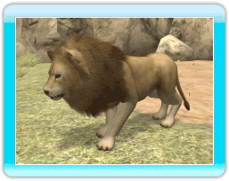
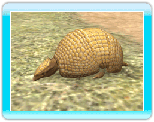

18 |
Einführung in Tiere |
 |
|

●Asiatischer Löwe Dieser im Wald lebende Fleischfresser bewegt sich meistens in kleinen Herden fort, jagt aber alleine. ●Grevy-Zebra Dieser Pflanzenfresser mit der einzigartigen Zeichnung lebt in Savannen oder Halbwüsten. Wenn er wach ist, verbringt er die meiste Zeit mit Fressen.  ●Nilpferd Dieser große Pflanzenfresser lebt in den Ebenen Afrikas und verbringt die meiste Zeit im Wasser. Er kann bis zu 5 Minuten unter Wasser bleiben.  ●Großer Panda Dieser beliebte Pflanzenfresser lebt in Bambusdickichten, wo er den Großteil des Tages damit verbringt, Bambusblätter zu kauen. 
●Afrikanischer Elefant Dieser große Pflanzenfresser lebt in Savannen und Wäldern. Er badet häufig im Wasser, da die große Hitze sehr leicht seine Haut austrocknen kann.  ●Dreibinden-Gürteltier Dieser kleine Allesfresser lebt in Wäldern und Savannen. Mit gerade mal 20 Zentimetern ist er sehr klein. Dieses Tier rollt sich zu einem Ball zusammen, um sich vor Raubtieren zu schützen.
|

 |